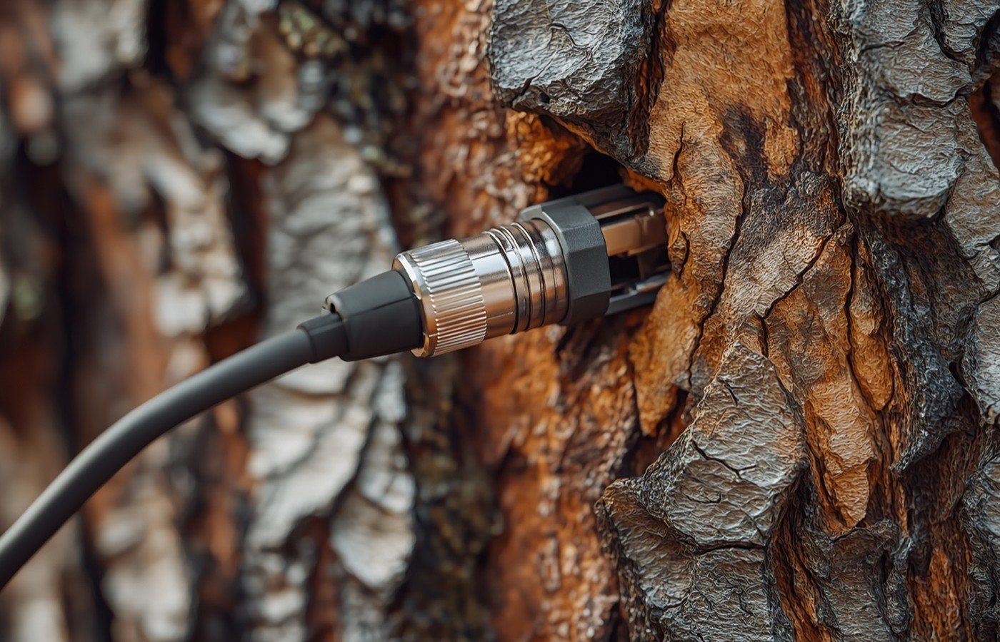

The Process
The Wire: Suno / AI Generation • The Wood: Human Concept / Lyrics / Curation

Methodology
Traditional music relies on the physical vibration of strings. We rely on the vibration of data.
- The Human Core: Every song begins with a human concept. The lyrics, emotional arc, and story are drafted by Rodolfo Arizpe. This is the Wood—the organic root that cannot be faked.
- The Digital Voice: We use generative AI (Suno) to interpret these inputs. The AI acts as the session musician and vocalist, strictly guided by our parameters. This is the Wire.
- The Synthesis: We curate, refine, and master the output using modern engineering tools (BandLab). The result is hybrid artistry: efficient, emotionally resonant, and unafraid of the machine.